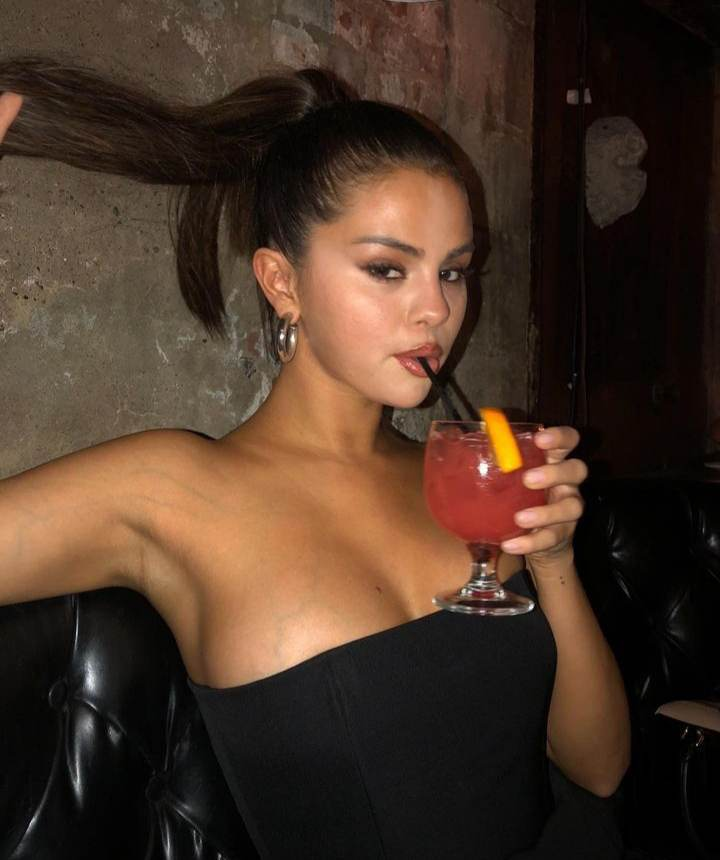

23 YRS OLD
“Always be yourself, there's no one better!”
Selena Marie Gomez (/səˈliːnə ˈɡoʊmɛz/ sə-LEE-nə GOH-mez; born July 22, 1992) is an American singer, actress, producer, and businesswoman. Gomez began her acting career on the children's television series Barney & Friends (2002–2004). As a teenager, she rose to prominence for starring as Alex Russo on the Disney Channel television series Wizards of Waverly Place (2007–2012). Alongside her television career, Gomez appeared in the films Another Cinderella Story (2008), Wizards of Waverly Place: The Movie (2009), Ramona and Beezus (2010), Monte Carlo (2011), Spring Breakers (2012), Neighbors 2: Sorority Rising (2016), and The Dead Don't Die (2019), and voiced Mavis in the Hotel Transylvania film franchise (2012–2022). See more